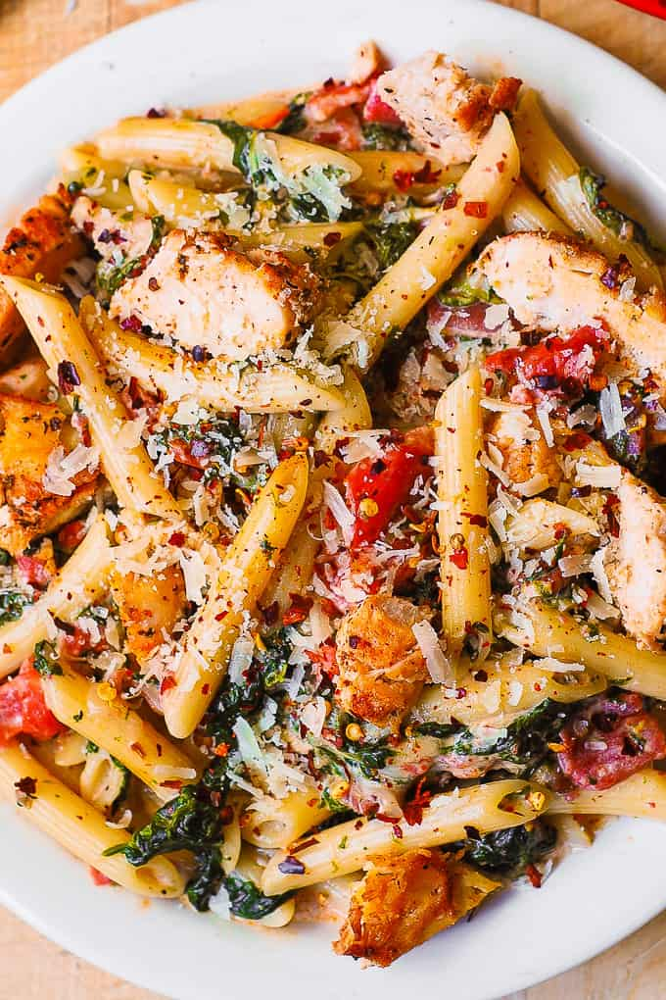

Chicken and Bacon Pasta

Description
Chicken and Bacon Pasta with Spinach and Tomatoes in Garlic Cream Sauce - an Italian-inspired dish with lots of vegetables! Sliced chicken breast and bacon are tossed with veggies and penne pasta in a delicious, creamy, homemade Alfredo sauce made with Parmesan cheese.
Ingredients
- 2 tablespoons olive oil
- 1 lb chicken (skinless, boneless chicken breasts or tenderloins)
- 1 teaspoon paprika
- 1 teaspoon Italian seasoning (thyme, oregano, basil - combined)
- salt to taste
- 1.5 cups heavy cream
- 1/2 cup Parmesan cheese shredded
- 5 tomatoes (medium, chopped in large cubes)
- 3 cups fresh spinach or 1 cup cooked spinach
- 5 garlic cloves minced
- 1/4 teaspoon red pepper flakes crushed
- 6 bacon strips cooked, drained off fat, and chopped
- 10 oz penne pasta (for gluten-free version, use gluten-free brown-rice penne)
- ½ cup Parmesan cheese shredded, for serving
Steps
- Heat 2 tablespoons of olive oil in a large skillet, on medium-high heat. Add chicken and cook on one side on medium-high heat for 4 minutes. While it cooks, sprinkle the uncooked sides of the chicken with paprika, Italian seasoning, and salt. Flip the chicken over, and cook on the other side for 3 more minutes on medium-high heat. Reduce heat to low-medium, flip chicken over again and cook, covered, for several minutes until no longer pink in the center. Remove chicken from the pan and keep chicken warm.
- To the same pan (but without chicken), add heavy cream and bring to boil. Only after the heavy cream starts boiling, add shredded Parmesan cheese. Immediately reduce to simmer (low-medium heat) and stir, while simmering, until the cheese melts and the sauce is creamy, for about 1 or 3 minutes.
- To the same pan with the creamy sauce, add chopped tomatoes, fresh spinach, garlic, crushed red pepper. Stir in the sauce on medium heat just until the spinach starts to wilt and sinks into the sauce. Add ⅓ of the cooked chicken (sliced into small strips) and half the bacon (already cooked and drained of fat). Mix everything. Remove from heat.
- In the meantime bring a large pot of water to boil, add pasta, and cook according to instructions (usually 10 to 15 minutes). Drain the pasta.
- Add cooked pasta to the skillet with the sauce and reheat on low heat. When ready to serve, top the pasta with the remaining half of bacon (cooked, drained of fat, chopped, gently reheated) and the remaining ⅔ of the cooked chicken (sliced into small strips, gently reheated). This is done for presentation purposes.
- When serving, top the pasta with 1/2 cup of shredded Parmesan cheese.